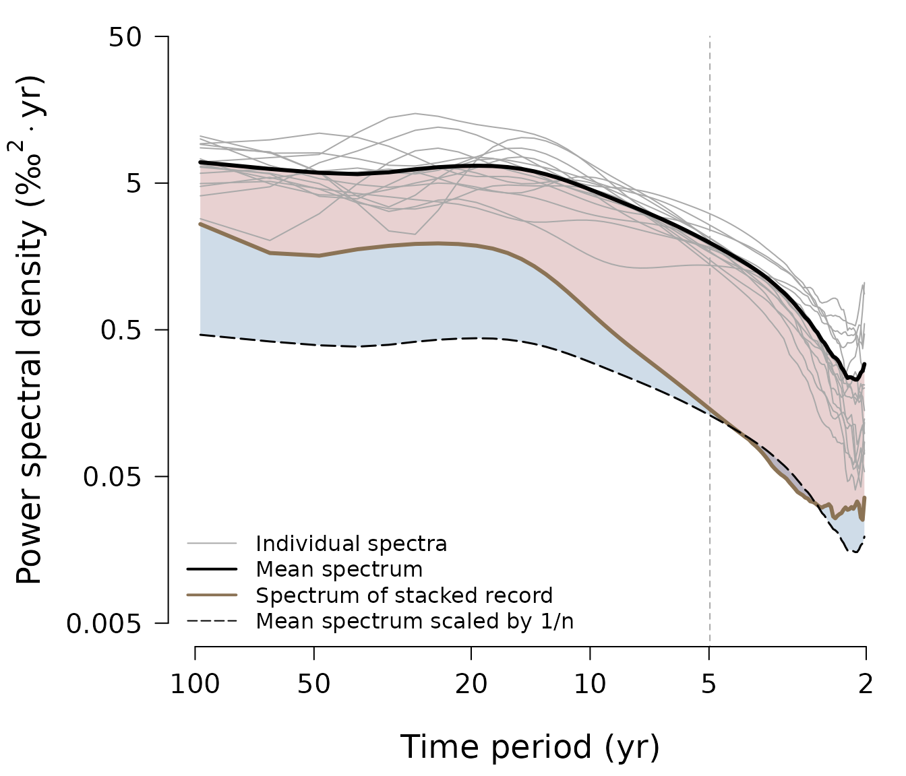
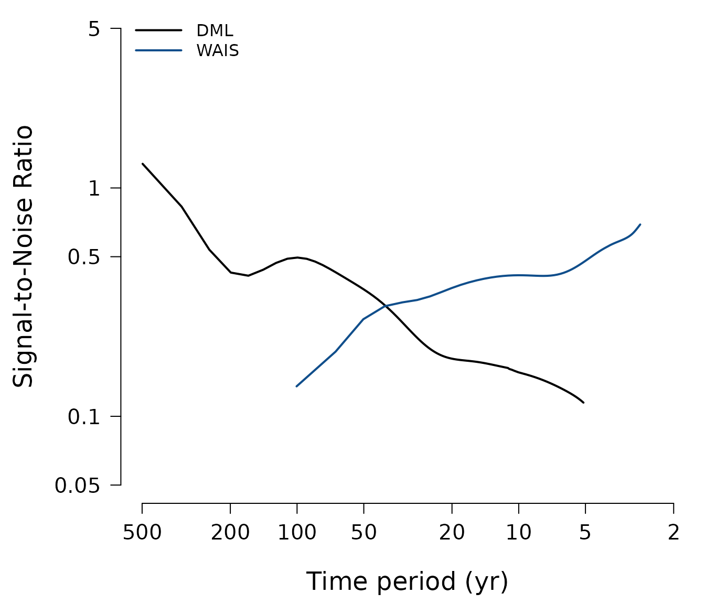
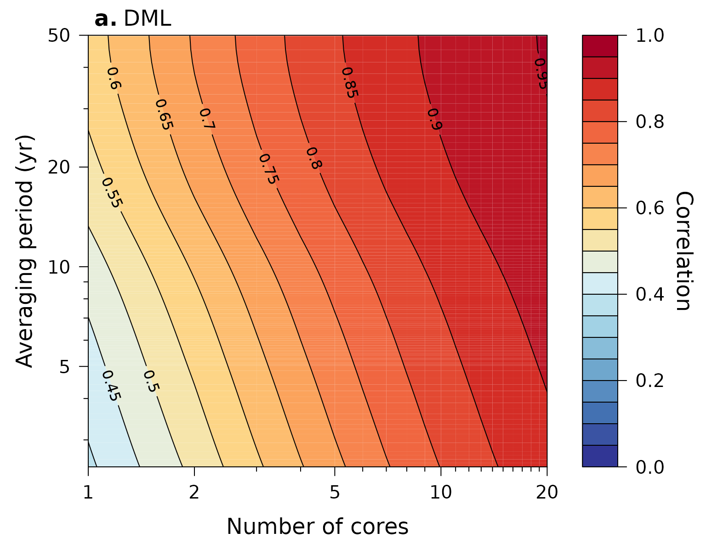
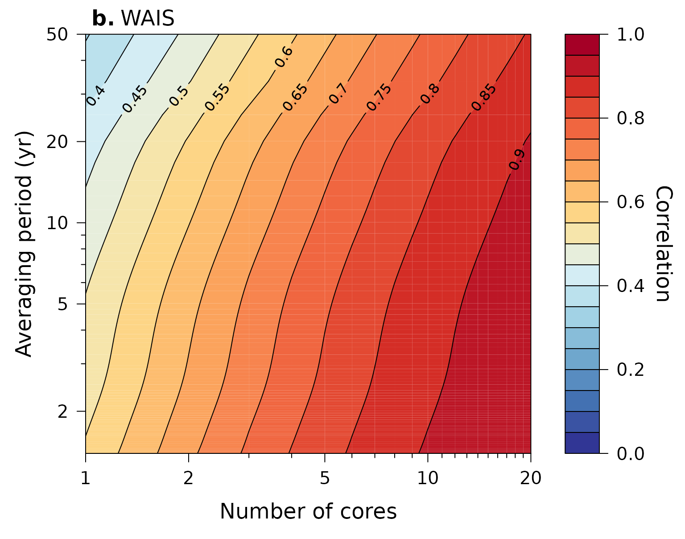
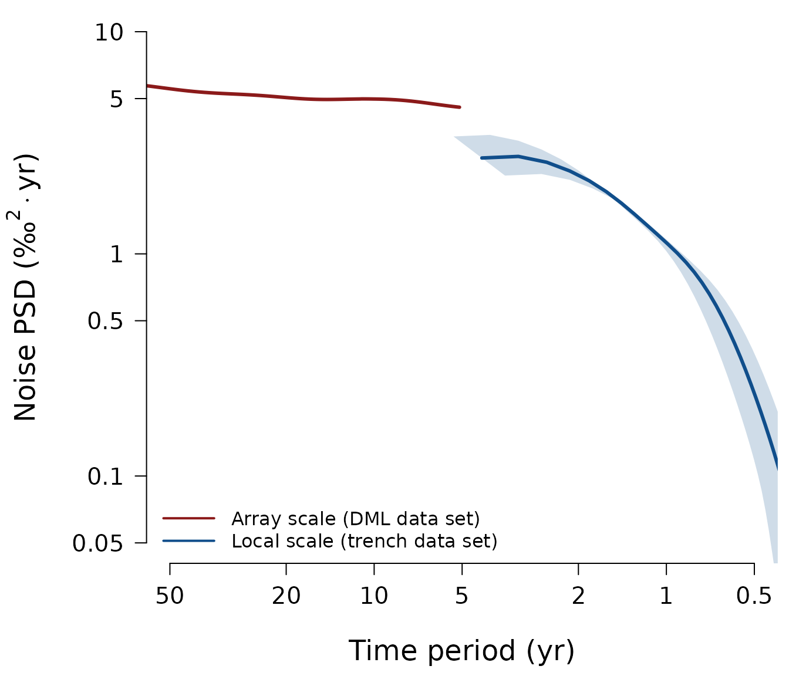

Plot results of Münch & Laepple (2018)
Source:vignettes/plot-muench-laepple-figures.Rmd
plot-muench-laepple-figures.RmdOverview
This vignette documents all the steps needed to obtain the main results presented in Münch and Laepple (2018) along with the plotting of the respective main figures.
Obtaining the spectral data
Produce the main spectral results for the DML1, DML2 and WAIS oxygen isotope datasets (i.e. the raw and corrected signal and noise spectra):
DWS <- WrapSpectralResults(
dml1 = dml$dml1, dml2 = dml$dml2, wais = wais,
diffusion = diffusion.tf,
time.uncertainty = time.uncertainty.tf,
df.log = c(0.15, 0.15, 0.1))This function is only a wrapper for the main package functions
ObtainArraySpectra() and
SeparateSignalFromNoise() which calls the two functions for
all the datasets that are specified as input to
WrapSpectralResults(). The function
ObtainArraySpectra() is used, for a specific dataset, to
calculate all individual spectra, the corresponding mean spectrum and
the spectrum of the stacked record (thus, of the average isotope record
in the time domain); SeparateSignalFromNoise() is used to
obtain the raw and corrected signal and noise spectra for this
dataset.
The datasets analysed in the paper are provided along
proxysnr in the variables ?dml and
?wais. The applied transfer functions to correct for the
loss in high-frequency spectral power by the effects of diffusion and
time uncertainty are included in the package datasets
?diffusion.tf and ?time.uncertainty.tf,
respectively; see the vignette
vignette("calculate-transfer-functions") for details on
obtaining these functions.
The output from WrapSpectralResults() is a list of the
spectral results for each of the datasets providing the estimated
signal, noise and signal-to-noise ratio spectra (i) without any
correction applied (“raw”), (ii) for only applying the
diffusion correction (“corr.diff.only”), (iii) for only
applying the time uncertainty correction
(“corr.t.unc.only”), and (iv) for applying both corrections
(“corr.full”):
ls.str(DWS)
#> dml1 : List of 4
#> $ raw :List of 4
#> $ corr.diff.only :List of 4
#> $ corr.t.unc.only:List of 4
#> $ corr.full :List of 4
#> dml2 : List of 4
#> $ raw :List of 4
#> $ corr.diff.only :List of 4
#> $ corr.t.unc.only:List of 4
#> $ corr.full :List of 4
#> wais : List of 4
#> $ raw :List of 4
#> $ corr.diff.only :List of 4
#> $ corr.t.unc.only:List of 4
#> $ corr.full :List of 4For all or only for some of the datasets, you can omit both or one of
the two transfer functions from the call to
WrapSpectralResults() in which case only the raw,
i.e. uncorrected, or only the partially corrected signal and noise
spectra are returned for these datasets.
Plotting the main figures
Plot DML1 isotope array spectra (Figure 1)
dml$dml1 %>%
ObtainArraySpectra(df.log = 0.12) %>%
PlotArraySpectra(marker = DWS$dml1$corr.full$f.cutoff[2],
ylab = expression(
"Power spectral density " * "(\u2030"^{2}%.%"yr)"))
Plot frequency dependence of signal-to-noise ratios (Figure 3)
Plot the final signal-to-noise ratio spectra from combining both DML datasets including additional logarithmic smoothing for visual purposes:
(SNR <- proxysnr:::PublicationSNR(DWS)) %>%
PlotSNR(f.cut = TRUE, names = c("DML", "WAIS"),
col = c("black", "dodgerblue4"))
Plot estimated correlation with common signal (Figure 4)
Calculate the estimated correlation of a stacked isotope record with the underlying common signal as a function of records averaged and the temporal averaging period (i.e. resolution) of the records, and plot it:
# for the DMl data
SNR$dml %>%
ObtainStackCorrelation(N = 1 : 20,
limits = c(1 / 100, SNR$dml$f.cutoff[2])) %>%
PlotStackCorrelation(label = expression(bold("a.")~"DML"),
ylim = c(NA, 50))
# for the WAIS data
SNR$wais %>%
ObtainStackCorrelation(N = 1 : 20,
limits = c(1 / 100, SNR$wais$f.cutoff[2])) %>%
PlotStackCorrelation(label = expression(bold("b.")~"WAIS"),
ylim = c(NA, 50))
Plot comparison of DML and Trench noise spectra (Figure 5)
We compare the noise spectrum of the DML firn-core array (“array
scale”) to the noise spectrum of the T15 trench oxygen isotope data
(“local scale”). The latter is supplied in the internal package variable
t15.noise and automatically loaded by the plotting
function:
proxysnr:::muench_laepple_fig05(SNR)
Literature cited
Münch, T. and Laepple, T.: What climate signal is contained in decadal- to centennial-scale isotope variations from Antarctic ice cores?, Clim. Past, 14, 2053-2070, doi: 10.5194/cp-14-2053-2018, 2018.